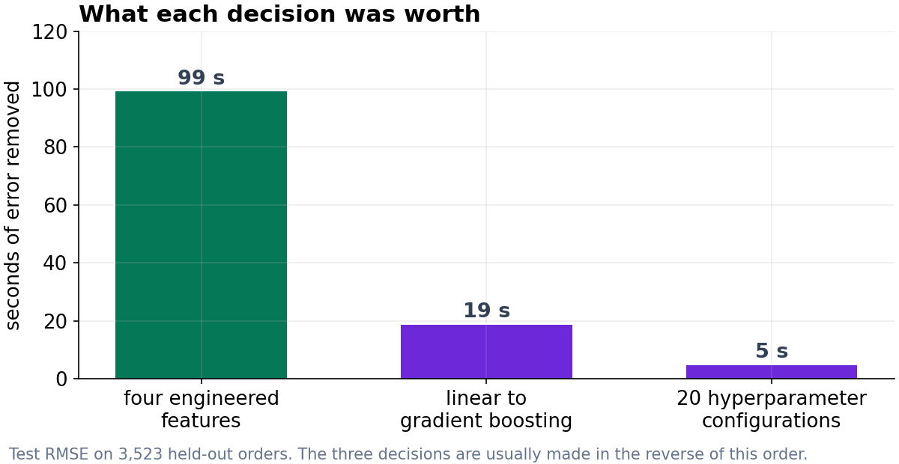
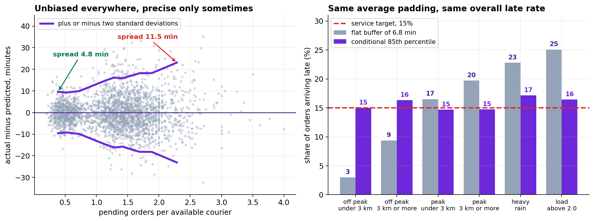
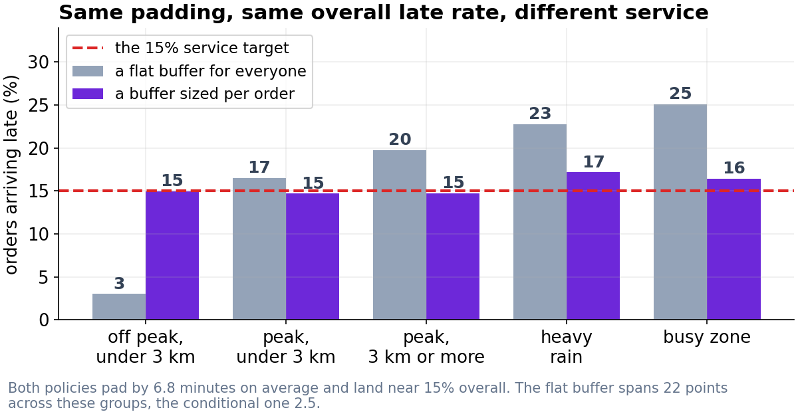

Where the Accuracy Came From, and Why the Point Estimate Is the Wrong Output
Features bought 99 seconds, model family 19, hyperparameter search 5. The learning curves then converged, and the remaining work was distributional rather than predictive.
1. Data, cleaning and design
The export held 42,520 rows. A duplicated block of 520 was removed on order_id; 384 cancellations recorded with delivery_minutes = 0 were excluded; 211 rows carrying distance_km = 999 from a GPS failure were excluded. That leaves 41,410 orders, mean 51.0 minutes, standard deviation 17.9.
The split is time-ordered rather than random, because the deployed model always predicts orders that have not occurred: days 0 to 69 for training (34,462), 70 to 76 for model selection (3,425), 77 to 83 held back (3,523). The test window was scored once.
2. Where the accuracy came from
| Feature set | Linear regression | Gradient boosting | Model family gain |
|---|---|---|---|
| Raw export columns | 9.898 | 9.588 | 0.310 min |
| Plus four engineered features | 8.017 | 7.935 | 0.081 min |
| Feature engineering gain | 1.881 min | 1.653 min |
A random search over 20 hyperparameter configurations, selected on the validation window, then moved the test RMSE from 7.935 to 7.857. The three decisions therefore bought 99 seconds, 19 seconds and 5 seconds respectively.
Two details about the search matter more than its size. The 20 configurations spanned 0.249 minutes on the validation window and the top ten spanned 0.095 minutes on the test window, so among the leaders the ranking is noise; the configuration that placed second on validation produced the best test score (7.848). And the validation score is optimistic relative to the test score by however much the search exploited that window, so the validation figure should not be reported as model accuracy.
3. Feature ablation
| Feature removed | Test RMSE | Cost | Derivable from present columns? |
|---|---|---|---|
| is_weekend | 7.935 | +0.000 | Yes, from day_of_week |
| is_peak | 7.990 | +0.055 | Yes, from hour_of_day |
| load (pending per courier) | 7.983 | +0.048 | Yes, from its two components |
| rest_hist (past-only expanding median) | 9.499 | +1.564 | No, it aggregates other rows |
The pattern is structural rather than incidental. A boosted tree can split on orders_pending and couriers_available independently and approximate their ratio, and can recover the lunch and dinner peaks from hour_of_day. It has no mechanism for computing a statistic across other rows. The operational rule is to engineer what the model cannot derive from what it already holds.
rest_hist was constructed as a per-restaurant expanding median with shift(1), so each order sees only that restaurant's earlier orders. A whole-file groupby median scores marginally better on this test set and is invalid, since it conditions on future outcomes.

4. Learning curve
| Training orders | Train RMSE | Test RMSE | Gap |
|---|---|---|---|
| 1,723 | 5.230 | 8.831 | 3.601 |
| 3,446 | 5.989 | 8.409 | 2.420 |
| 8,615 | 6.949 | 8.089 | 1.141 |
| 17,231 | 7.478 | 8.000 | 0.522 |
| 34,462 | 7.653 | 7.857 | 0.204 |
The curves converge and the final doubling of the training data reduced test RMSE by 0.143 minutes. Neither additional data of the same kind nor additional model flexibility will move this materially. The residual error is process variance, which redirects the project from point accuracy to distributional output.
5. Residual structure
| Segment | n | Bias | Residual SD |
|---|---|---|---|
| Off peak | 993 | -0.14 | 4.64 |
| Peak | 2,530 | -0.01 | 8.81 |
| Load under 0.8 | 945 | -0.10 | 4.67 |
| Load above 2.0 | 335 | +0.76 | 11.54 |
| Under 2 km | 1,107 | -0.00 | 6.74 |
| Over 6 km | 394 | -0.37 | 10.30 |
| Dry | 2,780 | -0.06 | 7.45 |
| Heavy rain | 338 | -0.02 | 10.42 |
Bias is negligible throughout; the conditional standard deviation varies by a factor of about 2.5 and is predictable from features already in the model. This is the property that makes a conditional interval worth more than a constant one.

6. The displayed value as a quantile
The operations cost ratio is 3:1 for late against early. Under an asymmetric linear loss the minimizer is the quantile at τ = clate/(clate + cearly) = 0.75. Quantile-loss gradient boosting was fitted at five levels on the same features and split.
| Displayed value | Late | Mean padding | Cost per order |
|---|---|---|---|
| Point prediction | 46.3% | 0.00 | 11.258 |
| Point prediction + 8 min (current) | 11.8% | 8.00 | 11.040 |
| Conditional 70th percentile | 30.9% | 2.78 | 9.805 |
| Conditional 75th percentile | 26.1% | 3.92 | 9.622 |
| Conditional 80th percentile | 20.7% | 5.29 | 9.670 |
| Conditional 85th percentile | 15.0% | 6.82 | 10.146 |
| Conditional 90th percentile | 10.7% | 8.94 | 11.171 |
The empirical minimum falls at the 75th percentile as the theory requires, 12.8 percent below the current policy. The 15 percent service target requires the 85th percentile, which costs 5.4 percent more than the cost-optimal choice. That trade is a business decision rather than a statistical one.
7. Conditional against constant padding
To isolate the value of conditioning, a constant buffer was set to the mean padding of the conditional 85th percentile (6.82 minutes), so both policies spend identical total padding.
| Segment | n | Current +8 | Matched flat 6.82 | Conditional 85th |
|---|---|---|---|---|
| Off peak, under 3 km | 534 | 1.9% | 3.0% | 15.0% |
| Off peak, 3 km or more | 459 | 6.3% | 9.4% | 16.3% |
| Peak, under 3 km | 1,369 | 13.5% | 16.5% | 14.7% |
| Peak, 3 km or more | 1,161 | 16.4% | 19.7% | 14.7% |
| Heavy rain | 338 | 20.4% | 22.8% | 17.2% |
| Load above 2.0 | 335 | 22.1% | 25.1% | 16.4% |
| All orders | 3,523 | 11.8% | 14.6% | 15.0% |
Marginal late rates are indistinguishable (14.6 against 15.0 percent). Conditional late rates differ sharply: the constant buffer spans 22.1 percentage points across these segments against 2.5 for the conditional policy. Conditional padding runs from 2.6 minutes for the easiest decile of orders to 12.0 for the hardest.
No aggregate accuracy metric detects this difference. RMSE, MAE and the marginal late rate are all effectively equal between the two policies; the divergence is entirely in the conditional coverage, and it falls systematically on the same customers.

8. Limitations
The 3:1 cost ratio is a stated judgment rather than a measurement, and the optimal quantile moves with it: 0.67 at 2:1 and 0.83 at 5:1. A sensitivity table across that range should accompany any policy decision.
The model predicts under current dispatching. Displaying longer estimates on difficult orders will change customer behavior and therefore load, which changes the predictions. This feedback is not represented here, and detecting it requires a holdout that is maintained after deployment rather than a one-off evaluation.
The demand-side cost of a longer quoted time, that is, orders not placed, is absent from the dataset and from the cost function. It is the largest unmeasured quantity in the analysis and the clearest candidate for an experiment.
Eighty-four days covers a single season with no holiday peak and no restaurant turnover. The learning curve establishes that more orders of the same kind will not help; it says nothing about orders of a different kind.